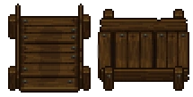

Pallet
| Pallet | |
|---|---|
 | |
Basic information
| |
Required Technology :
|
First slice |
Related pages :
|
Storage, Morgue, Corpse, Crates, Trade office, Crate factory |
Building Information
| |
Horizontal x Vertical :
|
4x3 |
Rotatable :
|
True |
Location(s)
| |
| Morgue, Cellar, Trade office, Souls room | |

There are two types of pallets:
Corpse pallets
The pallet can be used to store one corpse with a reduced amount of decay. Each pallet increases the  by one. There are also double pallets and fridge pallets for more elaborate corpse storage.
by one. There are also double pallets and fridge pallets for more elaborate corpse storage.
For more information about how corpses and corpse rating works see the corpse main page and for more information about preparing bodies see the morgue.
Crate pallets
The pallets for crates are built in the barn cellar by the crate factory or located in the trade office. They are used to deposit crates with goods to be sold by the merchant.
For more information follow the links of this section.
Cost
| Icon | Materials Required | Energy | Notes |
|---|---|---|---|

|
6× Flitch 4× Nails |
Requires First slice Adds 1 | |

|
12× Flitch 10× Nails |
Requires Anatomy II Adds 2 | |

|
12× Flitch 12× Nails 5× Complex iron parts |
- |
Requires Embalming II Adds 2 |
| 6× Flitch 1× Fame |
Requires advancing the merchant's quest |
| ||||||||